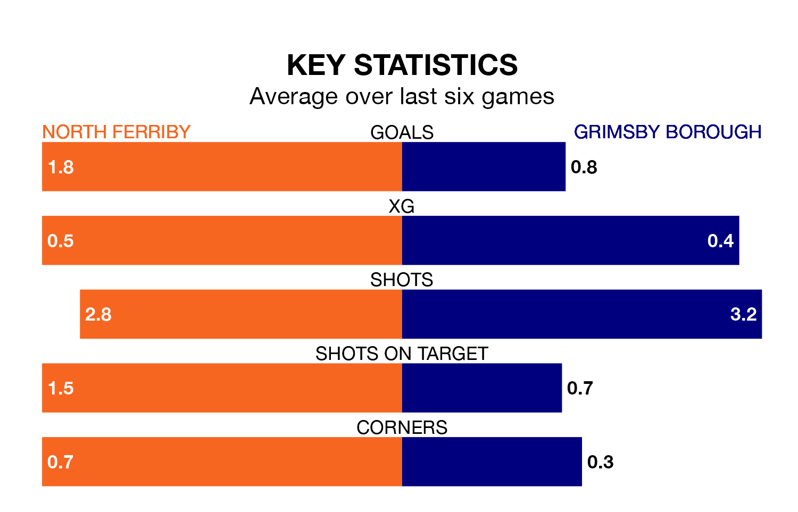

Grimsby Borough travel to North Ferriby on late Tuesday in the Northern Premier League Division One East.
The visitors come into the game on the back of a win in their last match, having beaten Carlton Town 2-1 away.
North Ferriby also won their last match, 3-1 against Bridlington Town.
With 23 goals in 19 games so far this season, Grimsby are scoring at below the league average rate with 1.2 goals per game. And they are conceding at an average rate, letting in 31 goals at a rate of 1.6 per game.
North Ferriby, meanwhile, are above average scorers, with 1.8 goals per game, compared to a league average of 1.6. They have conceded 2.0 goals per game.
Borough are 16th in the table after 19 games, of which they have won six and drawn two, earning 20 points.
The home side are eight places ahead of the visitors in eighth, with nine wins and two draws putting them on 29 points.
North Ferriby are in mixed form in the Northern Premier League Division One East, with two wins and a draw from their last six games.
And also with two wins and a draw over that period, Grimsby's form is identical – they have both taken seven points from 18.
Updated: 12:57, 02/01/24